Now that we have a 3D model of a nose, we can render it in real-time in a UWP app. To create the app, we will use the Unity 3D rendering engine. Unity 3D has built-in support for loading Filmbox (FBX) files. We just need to load the model, add it to a scene, and export it as a UWP. This will allow us to simulate how our prototypes looks in the real world!
This walkthrough assumes that you have: Windows 10 Creators Update 3D Nose Model from Paint 5.1.1 * Unity 5.6 and the UWP Plugin for exporting a Unity project to a UWP app
From the Windows Start menu, launch Unity. When the Project dialog appears, click the New icon. > Note: If you are launching Unity for the first time, log in with your free unity3d account.
In the New Project dialog, give the project a name, click 3D, and specify a location for your project. Then click Create Project.
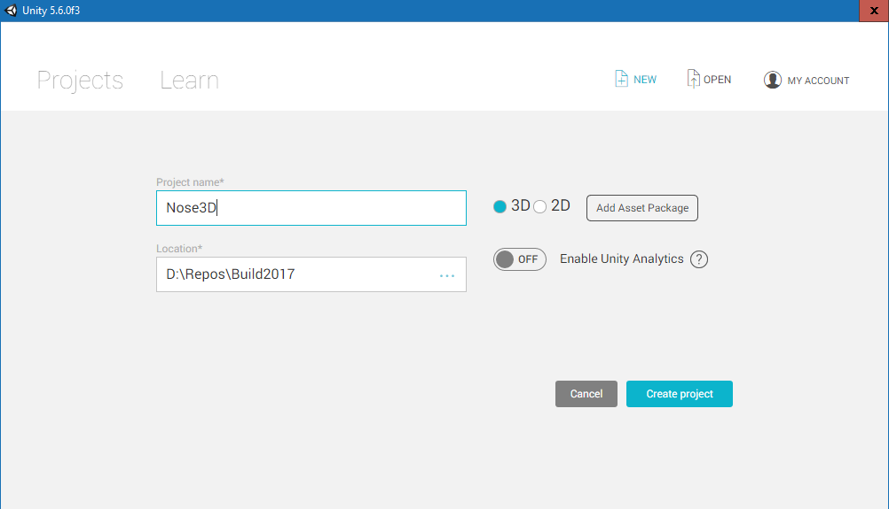
When the Unity designer appears, press CTRL+S to save the empty scene. The Save Scene dialog appears. Name the file Main.unity and save it in the Assets folder that should be selected by default (the path appears in the top of the dialog).
The interface
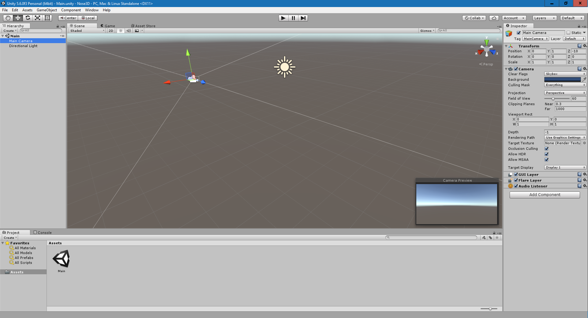
The Unity interface has five main areas. The 3D view in the center is your scene. Above the 3D view is a Scene tab and a Game tab. The Scene tab is where you will be working. The Game tab is where you will preview the scene when you click the play icon at the top.
The Hierarchy pane, on the left, lists the objects in your scene. If the Main scene is collapsed, click the chevron to expand the tree-view control. By default, the scene has a Main Camera (your point-of-view when you preview the scene in the Game tab), and a Directional Light (think of this as the sun). This is where we will be adding our own objects to build up the scene. Each of these items is a GameObject.
The Project tab, at the bottom, displays the project file structure. Everything you work with needs to be in the default Assets folder.
The Inspector tab displays the properties of the selected GameObject. GameObjects in unity are composed of properties and components. For example, if you select the Main Camera from the Hierarchy window, you will see its properties and components.
Let's load the 3D Nose model that you created earlier in Paint 3D into Unity. 1. Click the Project tab in the bottom pane. Within the Assets pane, right-click and select Create > Folder. Name the folder Models.

Open the Models folder in the Project pane. You should see the NosePrototype FBX file in the Assets/Models folder:
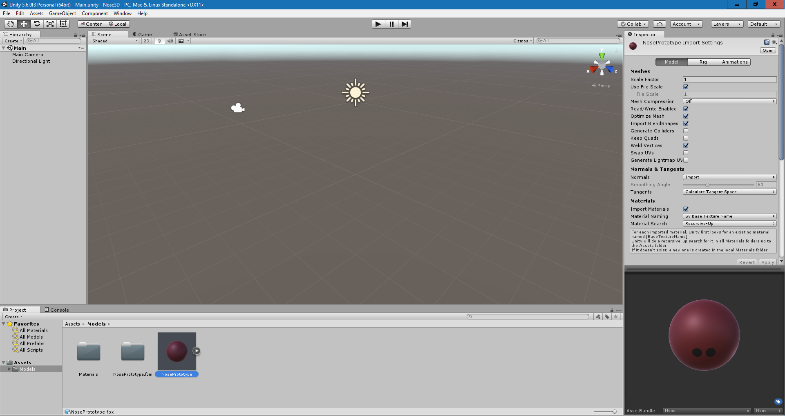
Drag NosePrototype from the Models folder to the Hierarchy window. You should see the nose in the Hierarchy view, but it may not be visible in the Scene view.
To make the nose visible in the Scene view, click on NosePrototype in the hierarchy view, hover the mouse over the Scene view, and press F on the keyboard to focus on the object. It should now be visible:
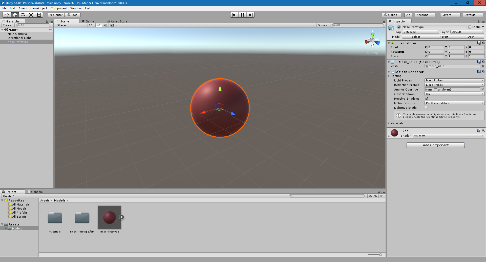
Click the Game tab on top of the Scene view to see how the scene appears from the camera. In the end, we want to position the nose so that it is visible from the camera.
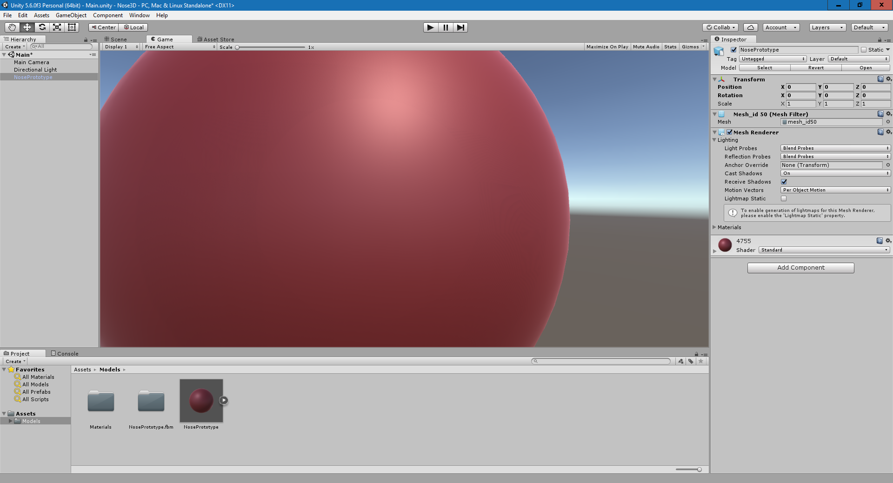
There are some issues we need to address:
To solve the scale issue, in the Hierarchy view click on the NosePrototype object. Then click the Inspector tab to the right of the game view to see the Position, Scale and Rotation properties. Set the Scale to 0.01
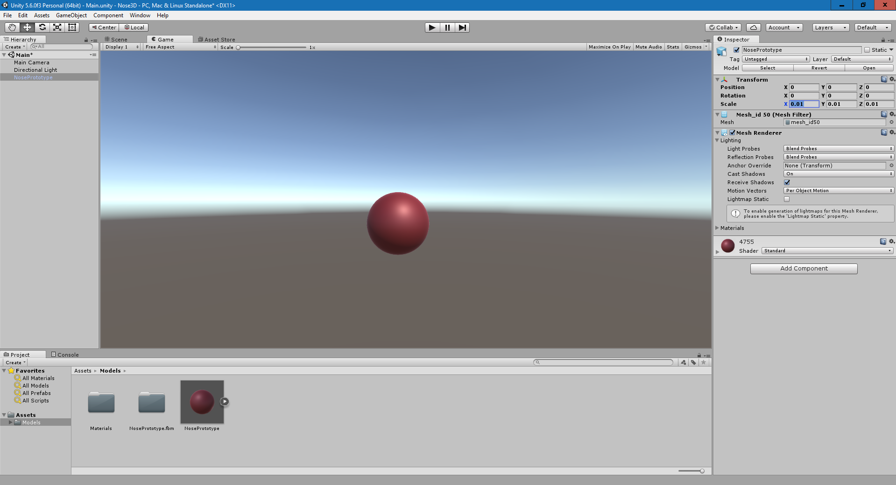
To solve the origin issue, add a new, empty GameObject to the scene by clicking the small Create button in the top-left of the Hierarchy panel. Then click Create Empty.
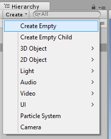
A new GameObject item appears in the Hierarchy window. Click the Scene tab and then click on the GameObject in the Hierarchy window. You can then view its properties in the Inspector window.
Set the name to Nose, and then set the all the Position fields to 0 to center the empty GameObject in the scene. Hover your mouse over the Scene view and focus the GameObject by pressing F. You will then see the empty GameObject in the center of the scene, with the nose somewhere next to it.
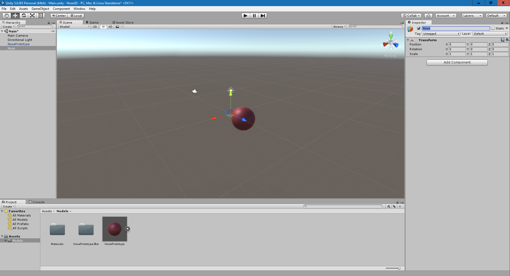
In the Hierarchy windows, click NosePrototype. In the Scene view use the axis handles to position it as close to the center of the grid (thus overlapping the Nose object) as possible. Drag the red and green handles using the mouse to do so. It does not need to be 100% accurate; just get as close as you can.
Tip: The handles allow you to move the object along the selected axis. You can use the Grid and these handles to align them to the center. Look closely in the image below and note how the nose has been positioned so that the grid aligns with the axis handles:
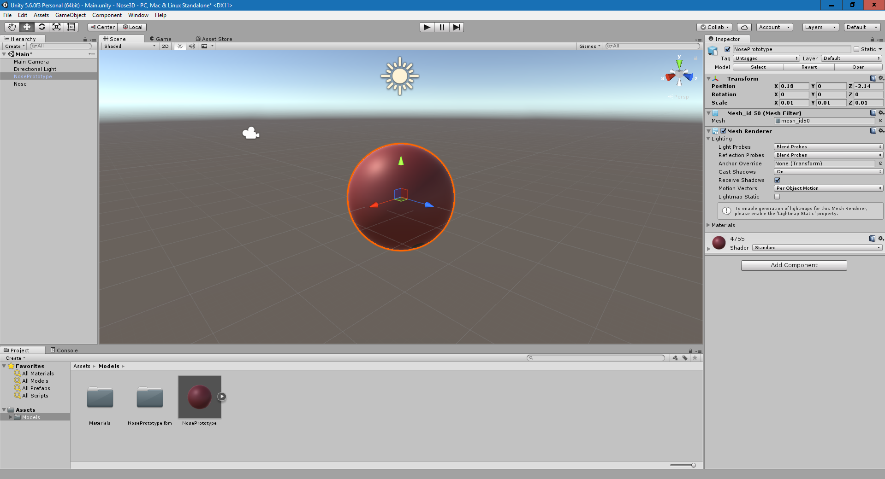
With NosePrototype in the center, we need to use the Hierarchy view to make it a child of the new empty Nose GameObject. In the Hierarchy view, drag the NosePrototype GameObject and drop it on the Nose GameObject to make it a child.
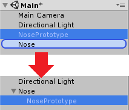
Children are positioned relative to their parent. This means that if we rotate or move the parent GameObject, the child GameObject will follow.
Let's fix the dark color issue. Each GameObject that has a visible surface, such as our NosePrototype 3D model, gets a material property. A material describes how the surface to which the material is assigned to will look and behave. This includes color, texture assignment and light calculations. For those who are familiar with graphics programming, a material is the shader used to render the polygons.
To find the assigned material that was generated when the model was imported, navigate to the Materials subfolder in the Assets folder, and click on 4755.
When we imported the object, Unity automatically generated a material, set the texture to what we made in Paint 3D, and assigned it to the model. The property that controls the texture is the Albedo property in the Main Maps section of the Inspector window.
You can see the texture on the left of the property in a thumbnail. To the right of the property is a gray color. This is multiplied against the texture, which darkens it. Set this color to white to fix the darkness issue. Feel free to play around with the metallic and smoothness settings to give it a metallic or matte look based on your preference.
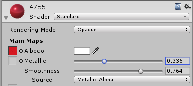
With the scale and color issues addressed, the color now looks more natural, the object has a better size and is centered.
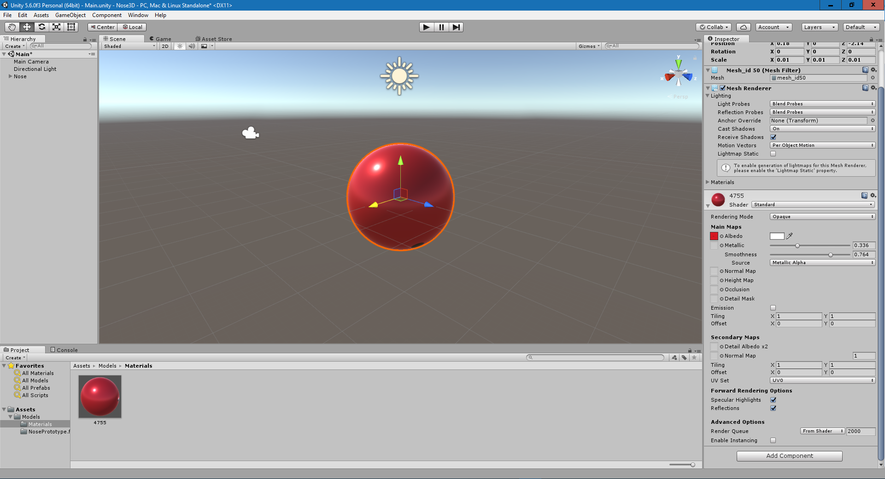
Click the Game tab to verify what the user will see when they launch the app. From this view, you can continue to modify the scale and position if needed. In my case, it now looks like this:
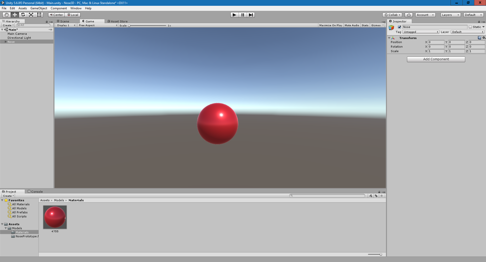
To make the nose rotate, we will create a custom component using C#. 1. In the Assets folder at the bottom of the screen, create a new folder named Scripts:

In the Scripts folder, right click and click Create > C# script. Name it NoseRotator
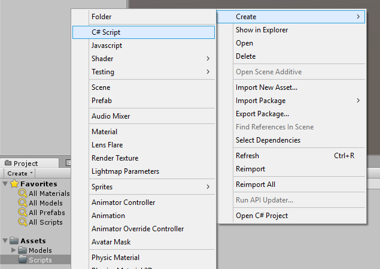
If the Nose GameObject in the Hierarchy view is not collapsed, collapse it now. Then drag and drop the NoseRotator script onto the Nose GameObject in the Hierarchy View, which adds it as a component to the Nose object:
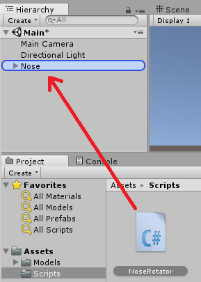
In the Hierarchy view, click on the Nose GameObject to see the component you added in the Inspector.
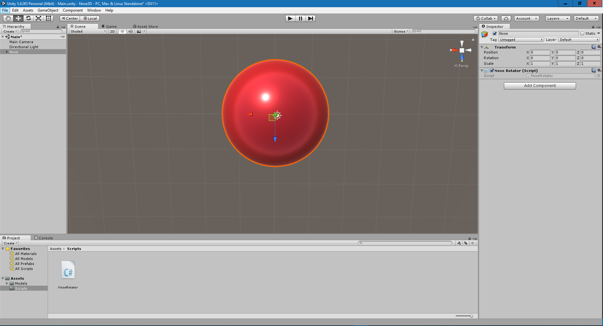
In the Project view, double-click the NoseRotator to edit the code. (Note: you can use the Unity Preferences (Edit > Preferences) to set which Editor you want to use. By default, Visual Studio opens.)
The script has two functions by default: Start() and Update(). Start() is called when the app launches. Update() is called every time a frame is rendered.
To animate the nose, we will rotate it slightly every time Update() is called. In Update(), add the following code:
csharp
transform.Rotate(Time.deltaTime * Vector3.up * speed);
Add a new public floating point variable called speed to the class, just above Start(). The code should now look like this:
```csharp
using System.Collections;
using System.Collections.Generic;
using UnityEngine;
public class NoseRotator : MonoBehaviour { public float speed = 50.0f;
// Use this for initialization
void Start () {
}
// Update is called once per frame
void Update () {
transform.Rotate(Time.deltaTime * Vector3.up * speed);
}
}
``
TheRotatefunction rotates the GameObject this script is attached to.Time.deltaTimeis the amount of time since the last frame was rendered, so it can be used to sync the timing with the clock.Vector3.upis a Vector that describes the X, Y, and Z-axis and is set to: 0,1,0 which means the object will only rotate around the Y-axis.speeddetermines how fast it will rotate. Since we multiplyspeedagainstTime.deltaTime,speed` determines how many degrees it will rotate per second.
Save the code and return to Unity.
Test the app: Before we export the project to a UWP app, we need to verify that the project is working. Click the Play button on top of the scene to automatically enter the Game tab and start running the code. You should now see the nose rotating in the center of the screen. It may be offset somewhat depending on how accurate you when you centered it earlier.
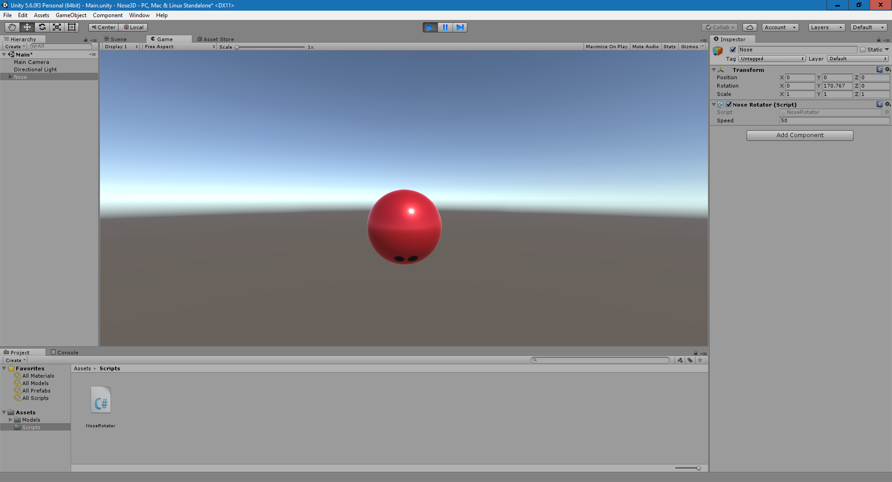
Tip: With the Nose GameObject selected, you can see the speed variable visible, and set to 50. Since we made the speed variable public, you can directly set the variable inside the editor instead of changing the script.
The final step is to export our Nose 3D visualizer as a UWP app so that we can distribute it. 1. On the main menu, click File > Build Settings. The Build Settings dialog appears. A gray area is visible named Scene in Build. Click the button below it named Add Open Scenes to add the scene we have created to the list. 2. In the Platform list, select Windows Store and then click Build:

When the **Build Windows Store** dialog appears, choose a location on your PC for the UWP app and click OK to begin exporting the project. This will take a minute.
In Visual Studio, from the Build Configuration dropdown, change the Build Configuration to Master and the platform to x64. Press F5 to build, deploy, and run the project.
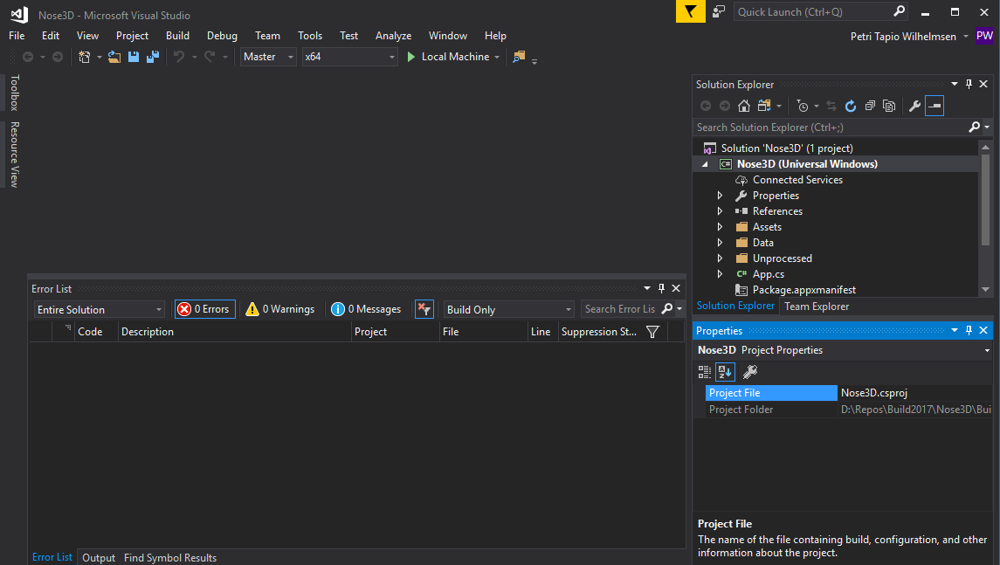
The project will take a few minutes to build. When it completes, you should see the rotating 3D nose in the center of the app.
Congratulations, you have created a 3D Nose visualizer UWP app using Unity! Since this is a Windows Store app, you can access it from the Windows Start Menu.